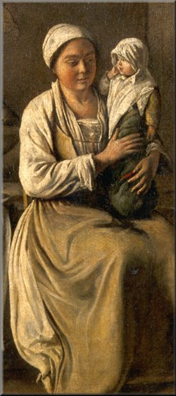
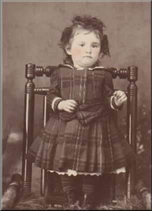

|
At a little
over two years old, in March 1664, Pierre le cadet lost his father, Mathieu
Choret.
His mother, Sébastienne Veillon, remarried
in August, to Pierre Aufroy, so ensuring the survival of
her family.
So Pierre grew up on his father's
land in Beauport with his five brothers, his sister
Jeanne, his mother Sébastienne and
his stepfather Pierre Aufroy. So Pierre
le cadet never really knew his father. 
|
|
Childhood
in New France
Living
conditions were harsh in New France. Houses
were cold and damp, and personal hygiene was
very basic. It is no wonder that so many
died young. One baby in four did not survive
its first year.
Generally,
people took care not to grow too attached to a child
before it reached fifteen or eighteen months, for
fear it would die. Indeed, it was called the "petit innocent" (little innocent) and was seen more as a
hungry little animal than as a human being.

From
its very first moments, without being washed, the baby was swaddled.
It could not move; this was thought to give it shape, to mould its
body and mind. Swaddling involved
several layers: napkins, a shirt, a
vest, a bonnet for the head and finally
bands wrapped around the whole. But this took
a long time, and some mothers changed their babies
only once or twice a day. So it was best for
the little ones to relieve themselves before being swaddled, and
mothers had their secrets: setting the baby's foot on a cold
stone to make it urinate, and slipping a piece of soap into
the anus to help it pass stool. A few months later
its arms were freed, and later its legs.
Ideas of hygiene differed from ours: if
napkins were only wet with urine, they were dried
without washing and reused as they were. It is
even said that, at least in Normandy, mothers
used these still-wet napkins to wash the
faces of their other children, thinking it gave them a
lovely complexion. At that time urine was believed to have healing
properties. Children were not washed often,
since dirt was thought to protect their skin. One or
two lice were left on the head to draw out
the "bad humours" of the skull.
Babies were breastfed by their mothers
until their teeth came through. Then weaning
began, feeding the little one a mixture of bread,
flour and milk that the mother had first chewed
in her mouth. This period also marked the end of
swaddling
and the start of robing. Boys and girls then
wore a dress, since it was thought to make
toilet training easier. The child was
left bare-bottomed under the garment and could
relieve itself whenever it liked. It was hoped it
would go outdoors like country
folk, or on a commode chair like town
folk. Toilet training was not pushed too hard,
unless the child was really slow
to learn. To teach it to walk, it was
put in a wicker or wooden frame, a baby walker.
Then it was put in a harness and held up when it
took its first steps alone. It wore a padded
cap so it would not hurt its head if it
fell.
Around
the age of six or seven, a boy went through an
important ritual: he traded his dress for
breeches. From
then on he was considered old enough to help his father
in the fields. A little girl, for her part,
went on wearing a dress and helped her mother with the housework
until she married. She never went far
from the house without a member of her
family acting as chaperone and watching over her honour.
At
seven, the child reached the age of reason.
In more
noble families, he did not take part in work on
the land, but thought was given to placing him as a cadet in
the army. Whatever his background, the child had to
make great physical efforts that slowed
his development. Children reached puberty around the age
of 12 or 13, but men sometimes kept growing
until 24 or 25, and girls, who worked as
hard as boys, might not reach puberty until 15, 16 or
even 17.
Although
thrust into the adult world very early, children
received an upbringing centred on religious
values and respect for authority, especially
that of the father and the king. Around the age of 11 or 12, they were
sent to catechism to prepare for their first communion
and confirmation. Sometimes they were also taught
to count, read and write. Classes were held
in standard French. So young people learned very early
not to use their parents' dialect.
Still,
it was mainly the children of privileged social groups
who had access to it.
At
15, a boy was treated exactly like an
independent adult and counted among the men able
to bear arms. At 16 he reached the legal age to
marry, but he generally waited until he was settled
on land before starting a family, which usually
happened around the age of 27. A girl, for her part,
was allowed to marry from the age of 14, and
yet the average age at which women married
was about 21. Once married, the couple
set about making the land prosper and having
children. The birth of a boy was always hoped for,
since it meant hands to help with the farm
work, as well as carrying on the name and ensuring
the parents' comfort in their old age.
Comparison
between France and its colony
The
French thought the Canadiens raised their
children too freely. There may have been a
Native influence in this. But the children
of New France were subjected to corporal punishment,
which was unthinkable among the Native peoples.
Education
took place mainly within the family. Only a
minority of people could sign their marriage contract, but
it was still a larger minority than in
France at the same time.
In
17th-century Canada people were in better health
than in France. They ate more meat, and
the water was purer. Women became
pregnant more easily and more often carried their
pregnancies to term. Mortality was lower
in Canada than in France because there were fewer epidemics, thanks to
the lower population density, a
better diet, and the cold. Ever since
Champlain's first winterers had understood how
to adapt to it, the cold no longer killed people but
helped them by hindering the spread of germs. In
France it was not until the 19th century that
mortality would be as low as in the colony.


N.B.
some of the practices listed above may seem
surprising, but remember that many of them
lasted into the 20th century. For example, in
the first half of the century, young boys still wore
dresses and long hair
in their early years, as photos
show. Here is a photo of Rosario
Charette, late 19th century. Some mothers
kept up these traditions until around 1950.
As for the healing properties
of urine, many people still believe in them. There
are schools of thought, unofficial
of course, along these lines.